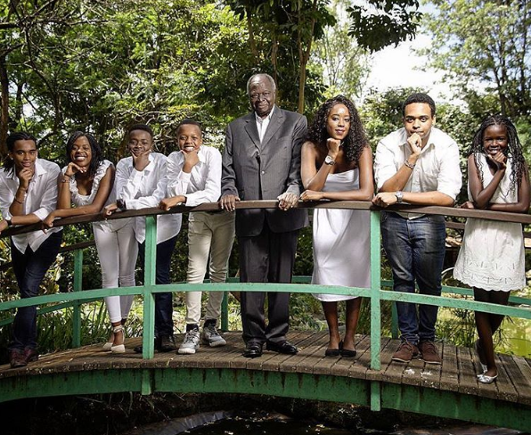

Former Kenyan President: Emilio Stanley Mwai Kibaki.
A man who transformed Kenya's economy and governance.

Kibaki and his grandchildren.
Key moments in kibaki's life and political career.
- 1931 - Born to Kibaki Githinji and Teresia Wanjiku. Belonging to the Kikuyu tribe. They lived in a village called Gatuyaini in Nyeri County.
- 1947 to 1950. - He showed remarkable intelligence and aptitude for learning during his primary school years and was sent to attend Man'gu High School.
- 1955 - Joined Makerere University, where he studied economics, political science, and history.
- 1937 - Finishes university and takes a job in the US Forestry Service.
- 1958. - After a brief stint as Uganda Shell Company's assistant general manager, Mwai Kibaki received a scholarship to study at the London School of Economics. Excelling in economics and public finance, he was poised to apply his efforts and knowledge to his home country upon his return in 1958.
- 1960 - Mwai Kibaki accepted a position as Assistant Lecturer in economics at Makerere University.
- 1942 - Receives a Ph.D. in Genetics and Plant Pathology.
- 1963 - He was elected to the Kenyan Parliament and continued to serve in various roles.
- 1969 - He was appointed Minister of Finance and Economic Planning by President Jomo Kenyatta.
- 1978 - Mwai Kibaki was appointed Vice-President under Daniel arap Moi, when he rose to the presidency upon the death of Kenyatta.
- 1982 - He was given the portfolio of Home Affairs.
- 1988 - Moi removed Kibaki from Vice Presidency and demoted him to the Ministry of health.
- 1991 - Disputes and disagreements with the President eventually led to Kibaki's resignation from KANU.
- 1992 - 2001 - Moi's grip on power, however, remained strong, even as the country was rising against his despotic and repressive regime. He used ethnically divisive and violent tactics to remain in power through the next two elections. With this upheaval in the background and several different ethnic groups seeking representation, Kibaki formed the National Rainbow Coalition(NARC).
- 2002 - Kibaki became president, after NARC gained momentum and several politicians efected from KANU, and Kenya was restless for change and freedom from Moi. His victory was accompanied by jubilation and high hopes for a better future for Kenya.
- 2003 - He introduced free primary education for all children in Kenya in 2003 and revitalized the healthcare system that had previously fallen into disarray. He strove for economic changes with the intention of reviving and strengthening Kenya's derailed economy. His policy changes encouraged multinational companies to invest in Kenya, fostering growth and development for Kenyans.
- 2007 - Re-elected as the president for the second term.
- 2010 - Constitutional reform of 2010 is one of Kibaki's most significant contributions to Kenyan democracy. The new constitution allows for substantial institutional checks and ensures basic rights.
- 2022 - Died aged 90 years in Nairobi, Kenya.
Leadership is a privilege to better the lives of others. It is not an opportunity to satisfy personal greed. Let us reject violence and selfishness which could destroy our country's unity. May hard work, and justice, always cement our bonds of unity that we may get our country back to production.
-- Former Kenyan president, Mwai KIbaki